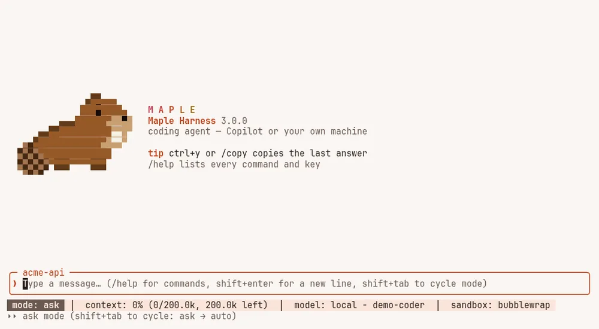
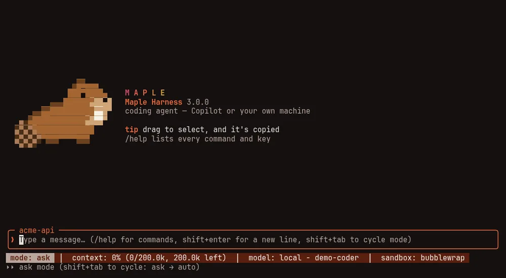

Get started3 min read
Your first session #
On this page
From installed to your first change in three steps: start the proxy, sign in to an account (or add a model server
of your own), and run maple-harness in your project.
In plain words #
- Three steps: start the proxy (or let the agent start it), sign in to an account or add a model server on the
setup page, then run
maple-harnessin your project. - The clicks. Open
http://127.0.0.1:11539. On a first run the Overview shows a welcome with three steps: sign in to Anthropic or GitHub Copilot there, or add a model server under Providers; optionally choose whatautouses; and copy the addresses. Only the first is needed. Then go to your project and type.
1. Start the proxy #
maple-proxy serveThe proxy is the one program that talks to models and keeps your sign-ins. The agent starts it for you if nothing is listening, so you can skip this step, but running it yourself lets you watch what it does. On first run it looks for Ollama and Apple's on-device model and writes a working starter configuration.
It opens three local addresses:
| Address | What it is |
|---|---|
http://127.0.0.1:11539 | The setup page: sign in, add models, make access tokens |
http://127.0.0.1:11535/v1 | An OpenAI-compatible API for your models |
http://127.0.0.1:11537 | An Anthropic-compatible API for your models |
2. Sign in or add a model #
Open http://127.0.0.1:11539 and either sign in to GitHub Copilot, save an Anthropic API key, or add a
local model server. If a model server is already running on this computer, the page offers to add it (see
Find the servers already running). Or do it from the terminal:
maple-harness auth login github-copilot
maple-harness auth login claudeDetails for each are in Sign in and Connect a model server.
3. Start the agent #
Go to a project directory and run:
maple-harness

/help lists every command.Type what you want done. Useful first commands:
| Command | What it does |
|---|---|
/model | Choose a model from the list, or /model auto to let the agent choose per message |
/help | List every command |
/remote | Share this session with your phone (Control it from your phone) |
/sandbox | See whether shell commands are contained |
/lsp | See which language servers are in use, so the agent sees compile errors after each edit (Language servers) |
/clear | Start over |
By default the agent asks before it writes a file or runs a command. Answer with the keys shown. Rules
in your configuration can allow or deny specific tools; a deny rule always wins.
--yolo means it
The flag --yolo allows everything you would otherwise be asked about (deny rules still apply), so use it only in
a throwaway checkout or a container.
Something not working?
Run maple-harness doctor. It checks the install and says how to fix each problem.
Where things are kept #
Everything lives in ~/.config/maple-harness/ (%APPDATA%\maple-harness on Windows): the configuration
file config.yaml, saved sessions, memory notes, and your sign-ins. Sign-ins are kept in your system
keyring where there is one, not in the configuration file.
Next #
- Commands and keys Everything you can type in a session, every key, and the shell commands.
- Choose a model Which model for which work, and how
autopicks one. - Settings by goal The settings that serve efficiency, efficacy and effectiveness.
- Harness settings Every
harness.*setting, with its default and its trade-off. - Control it from your phone Watch and drive a session from a phone or another computer.
- Proxy settings Every card on the setup page and every key in
config.yaml.